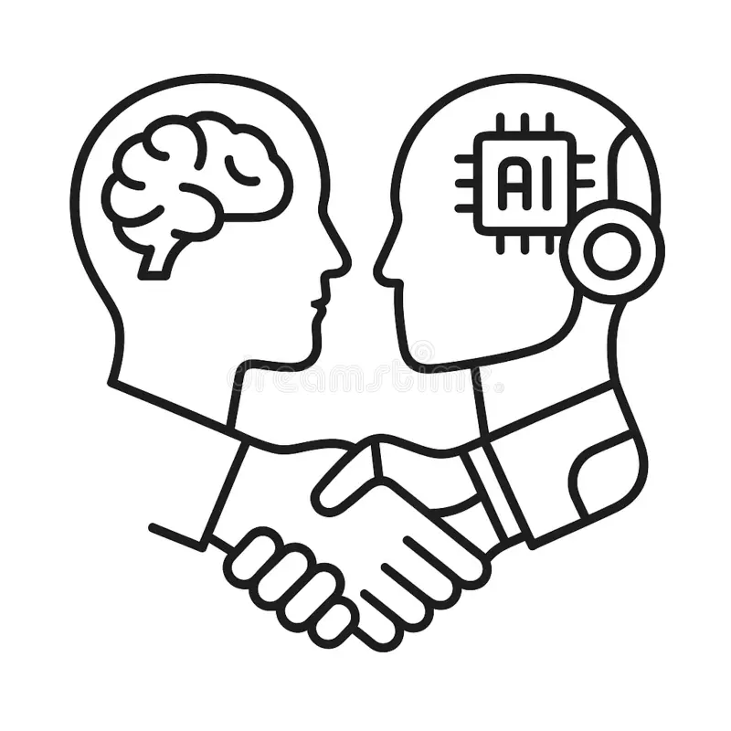

🌱 AI 시대, 어떻게 준비하고 적응할 것인가?
AI로 인한 변화는 위기이자 동시에 새로운 기회입니다. AI가 할 수 없는 것에 집중하고, AI를 우리의 도구로 활용하는 방법을 익히는 것이 중요합니다.
1. 평생 학습과 재교육

기술의 변화 속도가 빨라지는 시대에는 한 번 배운 지식만으로는 충분하지 않습니다. 지속적인 학습을 통해 새로운 기술과 정보를 습득하고, 필요에 따라 직무를 전환할 수 있는 유연성을 길러야 합니다.
- 온라인 MOOC (Coursera, edX) 활용
- 정부 및 기업의 직업 훈련 프로그램 참여
- 새로운 기술 트렌드에 대한 꾸준한 관심
2. AI와 협력하는 새로운 역량 개발
AI는 우리의 업무를 보조하고 효율을 높이는 강력한 도구입니다. AI를 효과적으로 활용하고 AI가 해결하지 못하는 문제를 해결하는 능력이 핵심 역량이 될 것입니다.
- **창의적 문제 해결 능력:** AI는 데이터 기반 해결책을 제시하지만, 창의적이고 비정형적인 문제는 인간의 몫입니다.
- **비판적 사고:** AI가 생성한 정보나 결과물을 맹목적으로 수용하기보다 비판적으로 평가하고 판단하는 능력.
- **공감 능력:** 인간과의 소통, 정서적 교류가 필요한 서비스 및 관계 관리.
- **디지털 리터러시:** AI 도구를 이해하고 활용하는 기본적인 능력.
AI는 '무엇'을 할 것인가보다는 '어떻게' AI와 함께 일할 것인가에 대한 고민이 필요합니다.